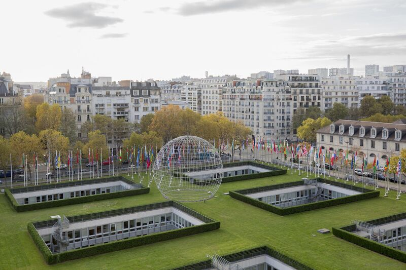
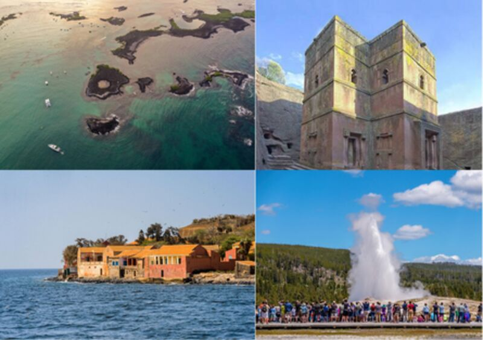
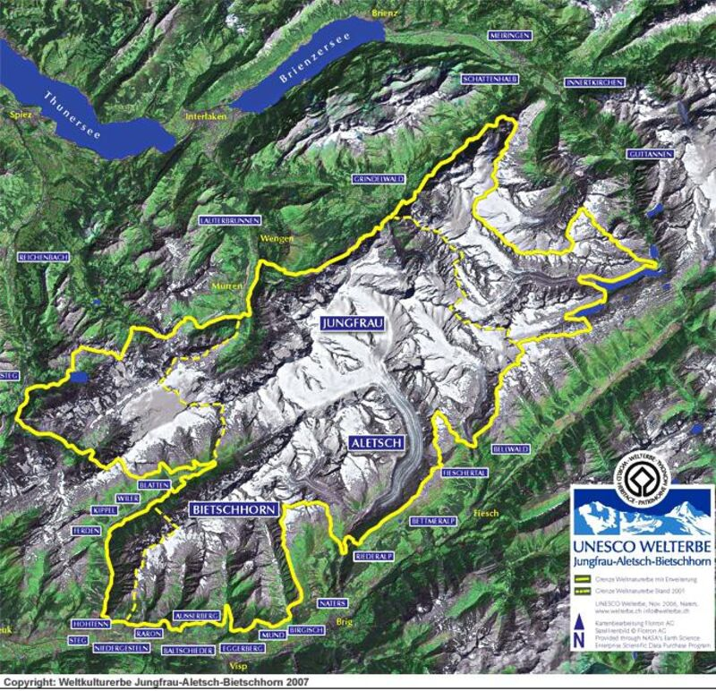
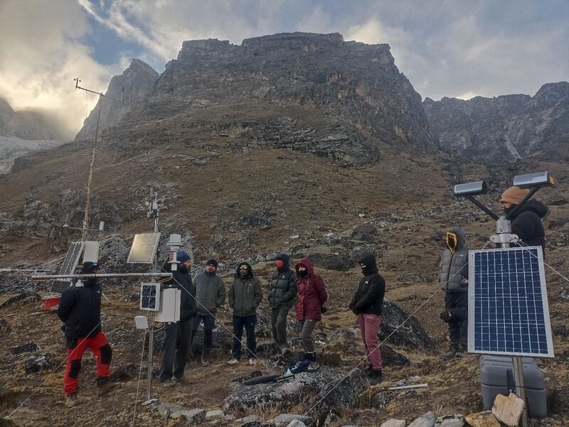

Frise chronologique des événements
1972
Convention du patrimoine
Adoption par l’UNESCO de la Convention...

1978
Premières inscriptions
Les premiers sites sont inscrits...

2001
Inscription initiale
Le site est inscrit sur la Liste...
2005
Gestion participative
Mise en place d’un plan de gestion...
2007
Extension du site
La superficie du site est étendue...

2008
Nom officiel
Le site adopte officiellement le nom...
2014
Rapport de suivi
Évaluation confirmant l’intégrité...
